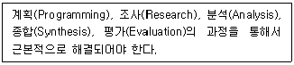
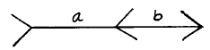
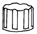
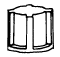
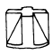
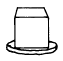

제품디자인산업기사 (2003-05-25 기출문제)
1과목: 제품디자인론
1. 다음의 디자인 전개 과정에서 평면작업이 아닌 것은?
- 모델링(Modeling)
- 아이디어 스케치(Idea Sketch)
- 렌더링(Rendering)
- 리디자인(Redesign)
(정답률: 58%)

2. 다음 중 좁은 의미에서 공업디자인(Industrial Design) 분야는?
- 시각디자인
- 건축디자인
- 제품디자인
- 환경디자인
(정답률: 알수없음)
3. 제품수명주기의 과정 중 동종이질의 상품이 등장하고 기존제품이 밀려남에 따라 판매가 급격히 하락하고 조업도가 낮아지는 단계는?
- 도입기
- 성장기
- 성숙기
- 쇠퇴기
(정답률: 알수없음)
4. 대칭이라고도 하며, 어떤 도형의 중앙에 대칭축을 놓고 보았을 때 성립하는 미적 형식 원리는?
- 비례
- 균형
- 반복
- 균제
(정답률: 67%)
5. 디자인 프로세스 중 기획단계에서 가장 중요하게 검토되어야 할 사항은?
- 제작(production)
- 광고(Advertising)
- 전달(communication)
- 사회화(socialization)
(정답률: 47%)
6. 영국의 산업혁명이 가져온 결과가 아닌 것은?
- 공업의 발전으로 도시의 팽창과 인구가 증가하였다.
- 농업과 상업의 분야가 쇠퇴하여 국내시장이 크게 축소되었다.
- 많은 식민지에서 여러가지 자원을 획득하게 되었다.
- 새 기술의 발전을 과시하기 위하여 만국 박람회를 개최하게 되었다.
(정답률: 84%)
7. 다음 중 제품디자인(product design) 분야와 거리가 먼 것은?
- 디스플레이디자인
- 텍스타일디자인
- 가전제품디자인
- 가구디자인
(정답률: 74%)
8. 과거의 합리적인 모랄(moral)에 대한 전적인 거절을 위해 1981년 밀라노에서 새로운 그룹의 기반을 조성하였으며, 역사적 디자인 모티브를 추출하여 재해석하거나 다양한 양식과 혼용, 복합적인 형태를 추구한 운동은?
- 멤피스(memphis)
- 포스트모더니즘(post-modernism)
- 아르누보(Art Nouveau)
- 합리주의(Rationalism)
(정답률: 50%)
9. 정확한 마감처리, 광택이 있는 표면, 명확하고 장식이 배제된 재료의 직접적인 표현, 자유로움을 특징으로 하는 것으로 1930년대를 주도했던 조형 양식은?
- 아르데코 스타일
- 유선형 스타일
- 키치 스타일
- 유기적 모더니즘 스타일
(정답률: 알수없음)
10. 20세기 초엽에 인더스트리얼 디자인(Industrial Design)이란 용어를 처음 사용한 사람은?
- 헨리 반데 벨데(Henri van de Velde)
- 존 러스킨(Johon Ruskin)
- 요셉 시넬(Joseph Sinel)
- 레이몬드 로위(Raymond Loewy)
(정답률: 알수없음)
11. 1890-1910년대 프랑스, 벨기에를 중심으로 한 자연물의 유기적 형태의 새로운 양식추구를 위한 실용 미술운동은?
- 아트앤드 크라프트
- 드 스틸
- 제쩨션
- 아루누보
(정답률: 93%)
12. 다음 중 강함, 엄숙함, 상승감, 유연성 등을 강하게 나타낼 수 있는 조형요소는?
- 점
- 선
- 면
- 입체
(정답률: 80%)
13. 다음 중 산업재산권에 해당되지 않는 것은?
- 발명특허권
- 지적저작권
- 상표등록권
- 의장등록권
(정답률: 60%)
14. 다음 중 현대 디자인의 합리적 기능주의에 가장 영향을 미친 것은?
- 유겐트 스틸
- 미술공예운동
- 바우하우스
- 드 스틸
(정답률: 90%)
15. 다음 순수 형태의 기본 형식 중 선의 동적인 형태가 올바른 것은?
- 점이 이동한 것
- 면의 한계 또는 교차
- 선의 한계 또는 교차
- 면이 이동한 것
(정답률: 79%)
16. 독일 공작연맹(DWB)의 설립이념과 관계 없는 것은?
- 양질화
- 규격화
- 단순화
- 개성화
(정답률: 85%)
17. 일본 산업 디자이너들이 모여서 결성한 기구는?
- JIDPO
- JIDA
- JDF
- JETRO
(정답률: 73%)
18. 다음 내용은 무엇에 대한 설명인가?

- 생산방법 문제해결
- 시장개척 문제해결
- 디자인의 문제해결
- 조형표현 문제해결
(정답률: 알수없음)
19. 다음 중 디자인 매니저가 하는 일로서 비교적 거리가 먼 것은?
- 디자인에 대한 특별한 인식과 능력보유
- 기술적 결과나 제품조형의 전개능력
- 제품계획과 상품전략에 대한 정보수집
- 소비자의 구매력과 경제적인 연관 통찰
(정답률: 47%)
20. 다음 도형에서 a와 b의 실제 길이는 같으나 다르게 보이는 현상은?

- 대비
- 착시
- 원근
- 점이
(정답률: 알수없음)
2과목: 인간공학
21. 다음 중 작업분석의 주요 조사대상에 가장 맞지 않는 것은?
- 일에 필요한 인자
- 일을 하는곳
- 인간능력의 한계
- 디스플레이 및 컨트로울의 특성
(정답률: 84%)
22. 소리와 청각에 있어서 중요 3대 물리량이 아닌 것은?
- 진동수
- 압력의 변화
- 강도 또는 음량
- 계속시간
(정답률: 알수없음)
23. 근육피로를 측정하기위한 것으로 가장 적합한 것은?
- 심전도(ECG)
- 안전도(EOG)
- 뇌전도(EEG)
- 근전도(EMG)
(정답률: 92%)
24. 표면에 도달하는 빛의 단위면적당 밀도를 가리키는 척도는?
- 휘도
- 명료도
- 광도
- 조도
(정답률: 50%)
25. 한번 이상 돌려야 하는 손잡이의 형태로 가장 바람직하지 못한 것은?




(정답률: 80%)
26. 작업용 의자의 설계 고려사항으로 가장 적당한 것은?
- 등받침의 경사 103° 인 의자
- 팔받침대가 있는 의자
- 등받침이 어깨 높이까지 높은 의자
- 흉추이하의 높이에 요추지지대가 있고 이동이 편리한 의자
(정답률: 70%)
27. 정신적 활동이 둔화되고 반응이 늦으며, 착오가 시작되는 실내 온도는?
- 10℃
- 18℃
- 24℃
- 29℃
(정답률: 62%)
28. 300m이상 장거리 전달에 적절한 청각신호의 주파수는?
- 20000Hz 이상 고주파
- 10000-15000Hz 대역파
- 5000-3000Hz 대역파
- 1000Hz 이하 저주파
(정답률: 28%)
29. 환경시스템의 설계시 발생하는 현상에서 인간에게 가장 관계가 없는 것은?
- 색의 명도와 채도
- 시각과 청각의 관계
- 조명의 관계
- 건축 방향의 관계
(정답률: 75%)
30. 두개의 물체를 적당한 위치에서 서로 교대로 제시할 때 물체가 그 공간에서 움직이는 것 처럼 보이는 현상은?
- 단일상
- 이중상
- 외관운동
- 착시
(정답률: 46%)
31. 원자력 발전소의 작업자가 용수로 내부의 온도를 측정하기 위해 온도계를 보고 정확한 온도를 읽고 있다. 이 작업자는 온도계를 다음 중 어떠한 용도로 사용하고 있는가?
- 정량적 읽음(Quantitative Reading)
- 정성적 읽음(Qualitative Reading)
- 점검 읽음(Check Reading)
- 상황 알림(Situation Awareness)
(정답률: 55%)
32. 다음 감성공학과 관련된 설명 중 틀린 것은?
- 인간의 심상을 구체적인 물리적인 요소로 번역하는 기술을 말한다.
- 감성공학은 구미에서 주로 개발된 기법이다.
- 자동차나 전자제품 등을 소비자의 취향에 맞게 개발할 때 적용할 수 있다.
- 감성공학과 기존 기술체계와의 근본적인 차이점은 정서적 충족과 물리적 편리성의 확보라는 목표에 있다.
(정답률: 70%)
33. 인간공학의 연구방법 중 제품의 이미지와 선호도 분석에 가장 많이 이용되는 연구 방법은?
- 사용빈도 분석법
- 순간조작 분석법
- 태도영역 분석법
- 작업부담 분석법
(정답률: 40%)
34. 다음 중 더글라스 백(Douglas Bag)과 관계가 밀접한 인체 특성치는?
- 심전도
- 근전도
- 혈압상승
- 산소 소모량
(정답률: 62%)
35. 건물의 내부 색채 도장시 반사율이 가장 적합치 못한 것은?
- 바닥 : 15-30%
- 천정 : 80-99%
- 윗벽 : 20-30%
- 아랫벽: 15-20%
(정답률: 28%)
36. 소음이란 시끄러운 소리를 말하는 것으로서 이 소음이 인간에 미치는 영향에는 여러가지가 있다. 다음 중 이러한 영향과 거리가 가장 먼 것은?
- 청력기능의 저하
- 음성명료도와 이해도의 저하
- 정신작업의 저하와 안면방해
- 행동의 부자유
(정답률: 알수없음)
37. 시신경의 흥분이 남아있어 처음본 상이 얼마동안 남아있는 현상은?
- 허상
- 환상
- 잔상
- 단일상
(정답률: 84%)
38. 스프래딩 캘리퍼스 측정기라고도 하며, 凹凸이 있는 것의 직선거리를 재는 계측기는?
- 촉각계
- 활동계
- 좌고계
- 각도계를 장착한 간상계
(정답률: 알수없음)
39. 운동경제의 원리에 입각한 손의 조작운동에 관한 설명 중 잘못된 것은?
- 두손의 운동을 동시에 개시할 것
- 휴식시간 이외에는 손을 놀리지 말 것
- 두팔을 동시에 반대방향에서 대칭으로 운동시킬 것
- 주어진 일을 할 때 최대한 세밀하게 일을 나눌 것
(정답률: 40%)
40. 다음 중 고령자를 위한 정보처리 작업의 설계지침으로 올바른 것은?
- 신호를 약화시킨다.
- 세부내용을 늘린다.
- 개념, 공간, 이동 양립성을 낮은 수준으로 유지한다.
- 시분할 요구량을 줄인다.
(정답률: 알수없음)
3과목: 공업재료 및 모형제작론
41. 도면의 치수 기입 방법 중 틀린 것은?
- R30
- 153.5
- 1450
- 23,450
(정답률: 67%)
42. 스크린 인쇄에 관한 설명 중 올바른 것은?
- 곡면 제품에 인쇄가 가능하다.
- 오프셋 윤전인쇄 보다 인쇄속도가 빠르다.
- 그라비어 인쇄보다 제판비가 많이 든다.
- 오프셋 인쇄보다 대량인쇄에 적합하다.
(정답률: 62%)
43. 다음 섬유의 종류 중 동물성 섬유에 속하는 것은?
- 대마
- 아마
- 견
- 석면
(정답률: 59%)
44. 활엽수에 관한 설명 중 옳은 것은?
- 재질이 비교적 연질의 것이 많다.
- 건조시 변형이 심하다.
- 침엽수에 비해 취재율이 높다.
- 나이테가 침엽수보다 규칙적이다.
(정답률: 62%)
45. 다음 합성수지 중 비행기 창재료에도 사용하며 투명도가 좋고, 강인성과 적당한 경도를 지니고 있어 현대 재료로서 각광을 받고 있는 플라스틱은?
- 아미노계 수지
- 비닐계 수지
- 아크릴 수지
- 스티롤계 수지
(정답률: 86%)
46. 유리 제조시 파유리를 사용하는 이유가 아닌 것은?
- 유리재료의 용해를 돕기 위해서 사용한다.
- 가격이 저렴한 유리를 만들 때 사용한다.
- 원료분말의 비산을 방지하기 위해서 사용한다.
- 유리의 기계적 강도와 균질도가 좋아지므로 사용한다.
(정답률: 30%)
47. 자동차의 차체, 배의 선체 등의 곡면을 등간격으로 잘라 곡선으로 나타낸 도면은?
- 외형도
- 곡면선도
- 계통도
- 공정도
(정답률: 93%)
48. 다음 중 목재 가공 기기가 아닌 것은?
- 실톱기계
- 벨트샌더
- 각 끌기계
- 그라인더
(정답률: 62%)
49. 다음 석고재료 가공과정에 대한 설명 중 틀린 것은?
- 혼합 과정에서 기포는 오래 저으면 없어진다.
- 석고 표면 연마는 400-600번의 내수사포를 사용한다.
- 석고주형의 이형제는 알칼리 비누용제가 쓰인다.
- 약간의 식초를 혼합하면 매우 빨리 굳는다.
(정답률: 75%)
50. 산업제품에 시용되는 재료가 일반적으로 구비해야 할 조건 중 비교적 거리가 먼 것은?
- 양적으로 충분하고 품질이 균일할 것
- 역학적 성질이 완벽할 것
- 입수하기가 용이할 것
- 가공기술적으로 완전할 것
(정답률: 64%)
51. 도금한 금속의 재질감의 표현시 빛의 특성은?
- 전확산
- 전투명
- 전반사
- 불투명
(정답률: 82%)
52. 목재의 무늬 등 바탕의 특징을 잘 나타내는 도료는?
- 수성페인트
- 유성페인트
- 유성 바니스
- 에나멜 페인트
(정답률: 59%)
53. 열가소성 플라스틱 제품의 금형은?
- 반압입형
- 압입형
- 사출형
- 유출형
(정답률: 91%)
54. 점토 제품 중 백색이며 투명하고 흡수성이 없으며 때리면 금속성의 음을 내는 것은?
- 자기
- 석기
- 도기
- 토기
(정답률: 70%)
55. 금속의 일반적 특성에 관한 설명 중 잘못된 것은?
- 소성변형 할 수 있다.
- 광택과 안정성이 있다.
- 다른재료에 비해 색채가 다양하다.
- 고체상태에서는 결정이다.
(정답률: 64%)
56. 소석고를 작업조건이나 제작형태를 고려해서 굳는시간을 연장시키고자 할 때 첨가제로 가장 효과적인 것은?
- 소금
- 경화제
- 식초
- 황산염
(정답률: 60%)
57. 동물의 뼈나 가죽을 녹여 만든것으로, 주로 목재의 접착제로 사용하는 것은?
- 아교
- 어교
- 카세인
- 알부민
(정답률: 알수없음)
58. 개략적이고 실제의 크기보다 작게 만든 모형은?
- 라-프 스케일 목업 모델(rough scale mock-up model)
- 풀 스케일 모델(full scale model)
- 스케일 목업(scale mock-up)
- 프로토타입 모델(prototype model)
(정답률: 30%)
59. 인쇄방식의 발달 순서가 옳은 것은?
- 평압식 ― 원압식 ― 윤전식
- 평압식 ― 윤전식 ― 원압식
- 원압식 ― 평압식 ― 윤전식
- 원압식 ― 윤전식 ― 평압식
(정답률: 55%)
60. 다음 금속모형에 대한 설명 중 틀린 것은?
- 프로토 타입 모델로 제작되는 경우가 많다.
- 금속분, 얇은 도금 등으로 금속과 같은 효과를 내는 것이 보통이다.
- 실리콘 고무형에 수지 등을 주입시켜 제작한다.
- 판금법, 주물법, 선반가공법 등이 있다.
(정답률: 40%)
4과목: 색채학
61. 명시도를 가장 중요시 하는 분야는?
- 안전사고 방지표시
- 실내장식
- 포장디자인
- 마크디자인
(정답률: 알수없음)
62. 주광 아래서 배경색이 황색일 때 다음 어느 색의 글씨가 가장 명시성이 높은가?
- 흑색
- 청색
- 녹색
- 적색
(정답률: 알수없음)
63. 좁은 방이 크게 보이는 색채조절로 가장 적합한 것은?
- 저명도 고채도 난색
- 저명도 저채도 한색
- 고명도 저채도 한색
- 고명도 고채도 난색
(정답률: 67%)
64. 다음 연색성에 관한 기술 중 틀린 것은?
- 백색 물체가 적색광선을 받으면 연한 핑크로 보인다.
- 녹색 물체가 적색광선을 받으면 회색으로 보인다.
- 황색 물체가 녹색광선을 받으면 녹색기미의 황색으로 보인다.
- 녹색 물체가 황색광선을 받으면 연두색으로 보인다.
(정답률: 60%)
65. 회색 바탕위의 노랑은 주황바탕 위의 같은 노랑보다 더 선명해 보인다. 이와 같은 효과의 주된 대비는?
- 색상대비
- 보색대비
- 채도대비
- 색조대비
(정답률: 50%)
66. 색의 요소 중 시각적인 감각이 가장 예민한 것은?
- 색상
- 명도
- 채도
- 순도
(정답률: 34%)
67. 색을 구별하는 명칭은?
- 색상
- 채도
- 명암
- 색입체
(정답률: 80%)
68. "일반색명"이라고도 하며, 색상, 명도, 채도를 표시하는 색명은?
- 고대색명
- 고유색명
- 계통색명
- 유행색명
(정답률: 알수없음)
69. 색채조화의 원리 중 가장 보편적이며 공통적으로 적용할 수 있는 원리로 져드(Judd, D. B.)가 주장 하는 정성적 조화론에 속하지 않는 것은?
- 질서의 원리
- 숙지의 원리
- 명료성의 원리
- 보색의 원리
(정답률: 알수없음)
70. 다음 중 가장 안정된 느낌을 주는 색은?
- 백색
- 흑색
- 보라
- 청록
(정답률: 알수없음)
71. 무채색(無彩色)에 대한 설명 중 잘못된 것은?
- 흰색, 여러단계의 회색, 검정색 등 유채색의 기미가 없는 색이다.
- 무채색의 구별은 밝고 어두운 정도의 차이로 구별한다.
- 일반적인 무채색의 온도감은 약간 차거운 쪽에 가깝다.
- 반사율이 3%이하면 검정색으로 지각된다.
(정답률: 83%)
72. 색채에 대한 연상과 상징을 짝지어 놓은 것 중 올바른 것은?
- 흑색(black) - 겸손, 우울, 중성색, 점잖음
- 주황(Orange) - 원기, 적극, 희열, 풍부
- 청색(blue) - 창조, 우미, 신비, 고가, 예술
- 적색(red) - 애정, 코스모스, 창조적, 정서
(정답률: 알수없음)
73. 빛을 프리즘에 통과하였을 때 나타난 스펙트럼상의 색 중 가장 긴 파장을 가지고 있는 것은?
- 노랑
- 빨강
- 보라
- 녹색
(정답률: 알수없음)
74. 우리나라에서 채택한 산업디자인의 색채 표시방법(K.S)으로 가장 올바른 것은?
- 색명(영어명 또는 국어명)과 색채견본으로 표시하는 것이 이상적이다.
- 오스트발트 표색기호와 지정된 일반색명 및 색채견본을 함께 사용하는 것이 이상적이다.
- 먼셀 표색기호와 지정된 일반색명 및 색채 견본을 함께 사용하는 것이 이상적이다.
- 누구나 알기쉬운 국어 관용색명과 세계 공통의 표색기호만 사용하는 것이 이상적이다.
(정답률: 알수없음)
75. KS 안전색광 사용통칙에서 안전색광에 포함되지 않는 색은?
- 빨강
- 파랑
- 노랑
- 녹색
(정답률: 64%)
76. 다음 배색에 대한 설명 중 잘못된 것은?
- 고채도를 반복적으로 사용하면 색상간의 조화를 맞추기가 어렵다.
- 강한 난색계 끼리는 서로 반발하므로 한쪽은 채도를 낮추는 것이 좋다.
- 색상의 가짓수는 될 수 있는대로 줄여서 통일된 분위기를 살릴 수 있다.
- 명도단계는 조화를 깨치는데 영향을 주지 않으므로 명도의 다단계로 분위기를 안정 시킬 수 있다.
(정답률: 알수없음)
77. 먼셀의 색채기호 "5Y 9/14"에서 14는?
- 색상
- 채도
- 명도
- 백색량
(정답률: 60%)
78. 문.스펜서의 면적에 따라 느낌이 달라지는 것에 대한 설명 중 올바른 것은?
- 고채도의 색을 넓게 하면 균형이 맞고 수수하다.
- 고채도를 넓게, 저채도를 좁게 하면 화려한 배색이다.
- 한색계의 색을 넓게하고 난색계를 좁게하면 흥분감이 있는 배색이다.
- 고명도의 색을 좁게하고 저명도의 색을 넓게 하면 명시도가 낮아 보인다.
(정답률: 73%)
79. 시간의 장단과 색채에 관한 이론 중 올바른 것은?
- 색채연구가 져드의 이론이다.
- 붉은색은 길게 느껴진다.
- 푸른색은 길게 느겨진다.
- 노란색은 짧게 느껴진다.
(정답률: 알수없음)
80. 적색(赤色)의 보색(補色)은?
- 황색(黃色)
- 주홍색(朱紅色)
- 녹색(綠色)
- 자색(紫色)
(정답률: 82%)
아이디어 스케치는 아이디어를 구상하고 스케치로 표현하는 단계이며, 렌더링은 디자인을 3D 모델로 만들어 시각화하는 단계입니다. 리디자인은 기존 디자인을 수정하거나 개선하는 단계입니다.
반면에 모델링은 디자인을 3D 모델로 만드는 과정으로, 평면작업이 아닌 3차원 작업입니다. 따라서 모델링은 평면작업이 아닙니다.